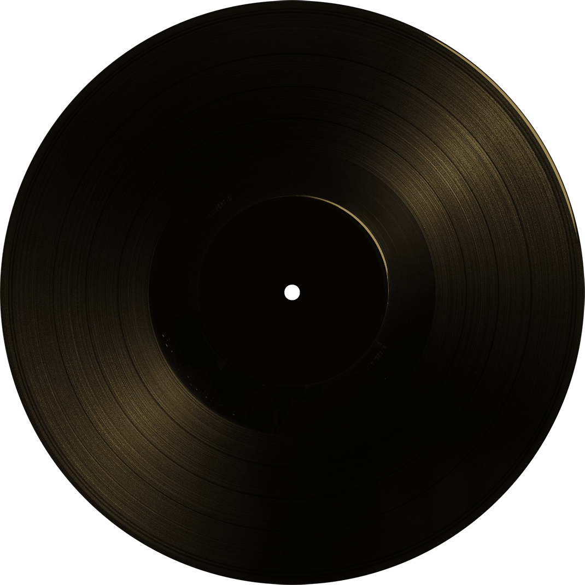

{{criterium}}
{{albums.length}} albums
Would you like a snack

{{album.artist}}
{{album.title}}
{{album.year}}
{{albums.length}} albums
{{artists.length}} artists
| Year | Number of albums |
|---|---|
| {{year}} |
{{item.nbOfAlbums}}
|
| Country | Number of albums |
|---|---|
| {{item.country}} |
{{item.nbOfAlbums}}
|
Hi!
Would You Like A Snack is a tiny web project with big music amibitions: dusting old prog albums, known as prog gems, to make them shine beside classic albums.
Prog albums are anything related to progressive music, from late 60's psychedelic vibes to early 80's electronic wave ; still focusing on the progressive bloom of the 70's.
This project is designed as a tool to discover albums, the way we would pick up vinyls in music stores, as well as centralizer of what can be found scrapping the web.
If you spot any wrong information or any typo, think of improvements, or would like to leave a sweet comment, please feel free to contact me at benjent@hotmail.fr.